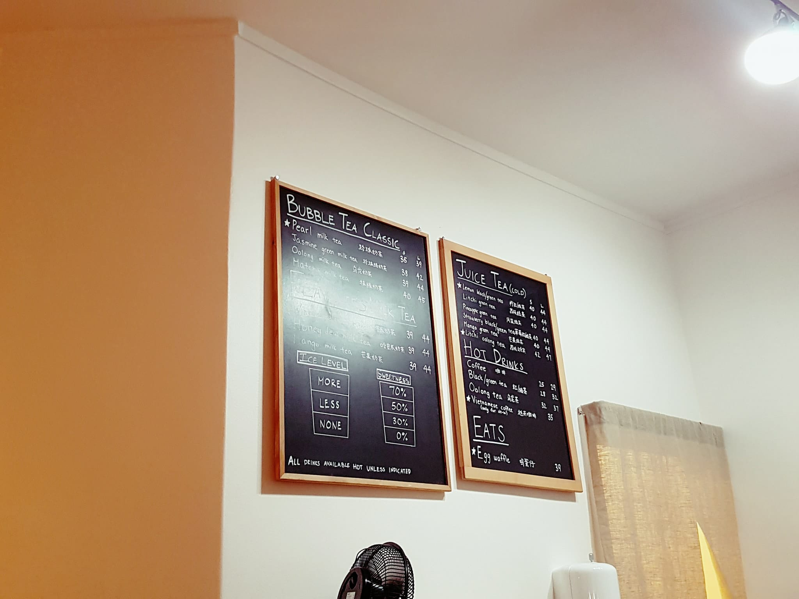

Cha talk - A piece of Taiwan
Welcome to my first blog entry, or article for that matter. I do know that it's technically the second article on the page but I made the blog template first with several temporary pages, which means that I'll have to fill up all the content at the same time. Writing isn't my strong point either so I've put the welcome-speech-article-wachamacallit in my backlog, hoping that I'll take care of it.. someday.. hopefully...
Bubble tea (also known as pearl milk tea, bubble milk tea, boba juice, boba tea, or simply boba) (Chinese: 波霸奶茶; pinyin: bōbà nǎichá, with tapioca balls it is 珍珠奶茶; zhēnzhū nǎichá) is a Taiwanese tea-based drink invented in Tainan and Taichung in the 1980s. Most bubble tea recipes contain a tea base mixed with fruit or milk, to which chewy tapioca balls (known as bubbles, pearls, or boba) and fruit jelly (especially tropical fruits like lychee) are often added. Ice-blended versions are usually mixed with fruit or syrup, resulting in a slushy consistency. There are many varieties of the drink with a wide range of ingredients. The two most popular varieties are bubble milk tea with tapioca and bubble milk green tea with tapioca.
Back on topic, Cha Talk opened up somwhere around september last year (I think) and it quickly became one of my favorite places. I ended up coming back again and again because of the drinks and service, just like many other customers I've seen. I would say that the bubble tea market itself is quite a niche category, which means that it's able to target a small but loyal audience. It's a tight community made up of chinese people and asian-fans(aka the-term-that-should-not-be-called).
Hot & cold
The reason why you can't find any pictures of the menu online is because it's temporary; It's a brand new menu with room for change. Before you criticize me, yes I know the picture's horrible and yes, I was too lazy to take a new one.
My favorite drinks
My favorite drink at Cha Talk is also the first one I tasted, the Winter Melon Milk tea but the vietnamese coffee is a close runner up. The vietnamese coffee is quite unique and also the coolest drink on the meny, It's a miniature drip-down coffee brewer on top of a glass with condensed milk. A perfect drink for those who have a sweet tooth, and likes caramel.